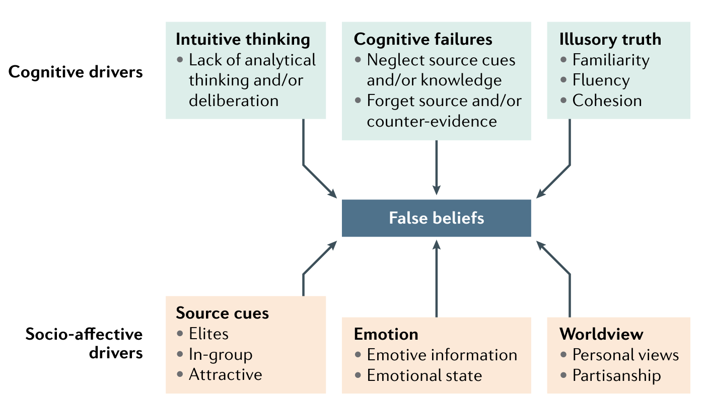
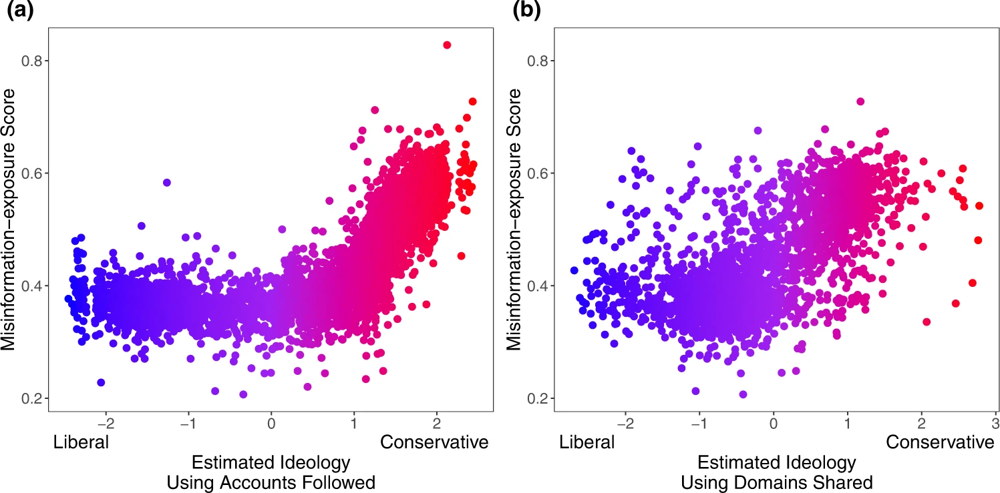

Wer verbreitet Misinformation?
2. Sehr aktive, extreme Nutzer

- politisch Motivierte mit extremen Einstellungen
- auch offline feindselig, online sichtbarer
Warum?
- Verlust von Status & Privileg
- Frustration im echten Leben
- kein Vertrauen in Institutionen
- kaum Repräsentation
Digitale Echokammern (“Filterblasen”)

- Echokammern: offline stärker als online
- Ausmaß variiert stark, z.B. auf Facebook:
- 20.6% Nutzer: 75% der Inhalte aus gleichgesinnten Quellen
- 23.1% Nutzer: unter 25% der Inhalte
- Algorithmen: kleiner (6%) & weniger starker Einfluss als soziales Netzwerk
- Gruppen & Pages: stark segregiert
Verbreiten Algorithmen Misinformation?
Down-Ranking von gleichgesinnten Inhalten auf Facebook:
weniger Misinformation & Hassrede
Nutzer finden trotzdem gleichgesinnte Inhalte

Algorithmus nein, Mensch ja

mehr Misinformation ohne Algorithmus
weniger Misinformation ohne Reshares
Zuletzt: Russland?!
Russische Desinformation erreicht nur kleine Teile der Gesellschaft
Interaktionen sind gering, insbesondere im Vergleich zu anderen Inhalten

- Es gibt keine Beweise dafür, dass russische Desinformation Einstellungen oder Wahlen beeinflusst wurden
Manche Menschen fallen einfach drauf rein


Aber Menschen sind eher skeptisch
Politische Einstellungen

\(\rightarrow\) politische Asymmetry

Soziale Dynamiken in den sozialen Medien

- Soziale Identitäten
- Gruppenzugehörigkeit und -abgrenzung
- Mobilisierung und Vernetzung
Suche nach sozialem Status
- Wettbewerb von Gruppen
- Status für politisch Motivierte
- Anonymität
Soziale Medien verzerren die Wirklichkeit

- laute Minderheiten
- Moderate melden sich nicht zu Wort
- Bsp: Klimawandel + Wirtschaft
Scheinbare Polarisierung
\(\rightarrow\) Wahrgenommene politische Spaltung verstärkt die emotionale Polarisierung
Für Neugierige
Bücher
Mercier, 2020 Misinformation & Propaganda
Bail, 2021 Polarisierung & Soziale Medien